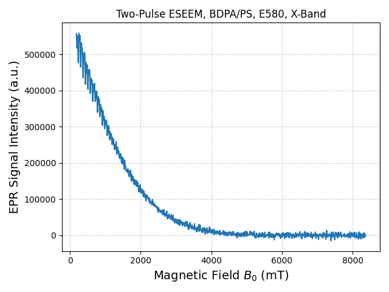

Note
Go to the end to download the full example code.
Two-Pulse ESEEM (#7)
This example demonstrates how to load and plot a Two-Pulse Electron Spin Echo Envelop Modulation (ESEEM) spectrum.
import spinlab as sl
import numpy as np
Once the Python environment is properly set up the data files can be loaded.
data_E580 = sl.load("../data/EPR/Two-Pulse ESEEM/33727-2PE.DTA")
E580: BDPA/PS
sl.plt.figure()
sl.fancy_plot(data_E580)
sl.plt.title("Two-Pulse ESEEM, BDPA/PS, E580, X-Band")
sl.plt.show()

The data set can be downloaded from the Sample Data page.
Total running time of the script: (0 minutes 0.101 seconds)